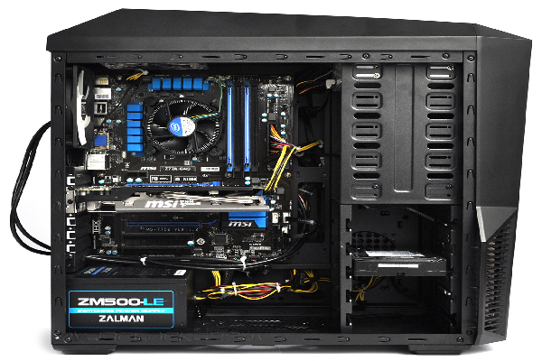

allikad:
protsessor
Toiteplokk
Arvutikorpus
Kõvaketas
Videokaart
Muutmälu
jähutus
välimus
juhtmed
Kiibistik

protsessor
Toiteplokk
Arvutikorpus
Kõvaketas
Videokaart
Muutmälu
jähutus
välimus
juhtmed
Kiibistik
Videokaart (ka graafikakaart, graafikakiirendi, kuvaadapter, videoadapter, graafikaadapter) on arvuti laienduskaart ja seade, mis muundab mälus oleva kujutise kuvarile arusaadavaks signaaliks.
Võib öelda, et videokaart on omalaadne "tõlk", mis võtab protsessorilt kahendsüsteemis andmed ja teisendab need pildiks, mida kasutaja kuvarilt näha võib. Kujutise loomine kahendsüsteemi andmetest on nõudlik protsess. Ruumilise 3D-kujutise loomiseks peab videokaart esmalt looma juhtraamistiku sirgjoontest, mis seejärel rasterdatakse (täidetakse järelejäänud pikslid) ning lisatakse valgustus, tekstuur ja värvid. Nõudlike graafiliste rakenduste puhul peab arvuti tegema seda protsessi kuni kuuskümmend korda sekundis. Ilma videokaardita poleks paljud arvutid võimelised sellist hulka arvutusi tegema.
EGA standardi tulekuga oskasid videokaardid saata digitaalsignaali otse kuvarile, kus see muundati elektronkiiretorule vajalikuks analoogsignaaliks. EGA-le järgnenud uut standardit – VGA-d – toetav videokaart oskas väljastada juba analoogsignaali. Tänu vedelkristallkuvarite laialdasele kasutamisele väljastab tänapäevane videokaart nii analoog- kui ka digitaalsignaali. Uued videokaardid oskavad peale oma põhiülesande täita ka lisafunktsioone, võimaldades näiteks kolmemõõtmelise ja kahemõõtmelise arvutigraafika kiirendatud renderdamist ning MPEG-4 dekodeerimist. Muid suure jõudlusega videokaarte kasutatakse graafiliselt nõudlike protsesside läbiviimiseks, näiteks nõudlike arvutimängude mängimiseks.